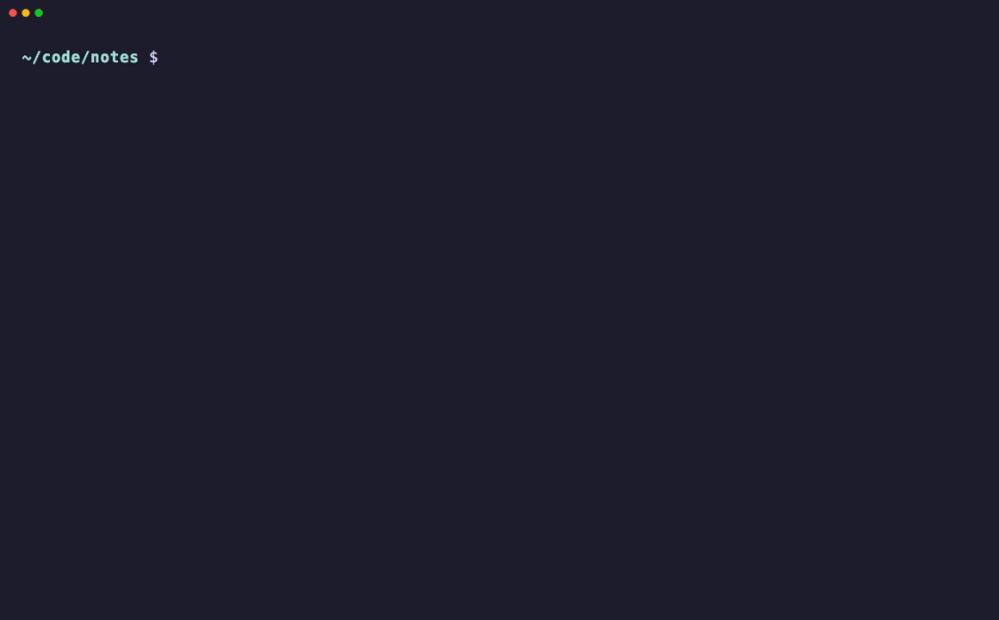

ccsearch
Full-text, BM25-ranked search over your entire Claude Code history — then jump back into any conversation in one keystroke.


Full-text, BM25-ranked search over your entire Claude Code history — then jump back into any conversation in one keystroke.



claude --resume only lists AI-generated titles. If you don't recognize the title, you're stuck. ccsearch indexes the full text of every session — your prompts, Claude's replies, the commands it ran, the files it touched, even subagent transcripts — and ranks matches with BM25. Search by what actually happened.
Every message, tool call, and file path in your history is searchable.
SQLite FTS5 with title-weighted scoring surfaces the right session first.
Pick a result; your shell jumps into the project dir and resumes — and stays there.
A custom bigram analyzer makes 2-character queries work where plain FTS5 can't.
-e expands your query with related terms when you can't recall the exact words.
SQLite compiled in. Sub-50ms warm search. macOS, Linux, Windows; zsh/bash/fish/PowerShell.
# Cargo (any platform) cargo install ccsearch # Homebrew (macOS / Linux) brew install yaalsn/tap/ccsearch # Or download a prebuilt binary from Releases, then enable shell integration: eval "$(ccs init zsh)" # or bash / fish / powershell
Then just ccs <what you remember>. Full docs on GitHub.
Indexing and search run entirely on your machine — your sessions never leave. Semantic mode sends only the short query text, never any conversation content.